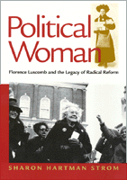

<body bgcolor="#FFFFFF" text="#000000" link="#0000FF" vlink="#CC0000" alink="#CC0000"><center><hr width="350" size="1" align="center" noshade>An absorbing biography of a woman who made politics the centerpiece of a long and useful life<hr width="350" size="1" align="center" noshade><p><a href="https://cdcshoppingcart.uchicago.edu/Cart/ChicagoBook.aspx?ISBN=9781566398183&&PRESS=temple" target="_top">Buy this book!</a> | <a href="https://cdcshoppingcart.uchicago.edu/Cart/Cart.aspx?PRESS=temple" target="_top">View Cart</a> | <a href="https://cdcshoppingcart.uchicago.edu/Cart/Cart.aspx?PRESS=temple" target="_top">Check Out</a></p><p></p></center><!--none//--><h1>Political Woman</h1>
<H2>Florence Luscomb and the Legacy of Radical Reform</H2>
<h3>Sharon Hartman Strom</h3>
<P>cloth 1-56639-818-5 $95.50, Jan 01, <FONT COLOR=#990033>Available</FONT>
<br>paper 1-56639-819-3 $35.95, Jan 01, <FONT COLOR=#990033>Available</FONT>
<BR> 352 pp
7x10
25&nbsp;halftones
</P><BLOCKQUOTE><I>"Sharon Hartman Strom's biography of Florence Hope Luscomb is a fascinating tribute to a strong, determined woman. More important, because Luscomb's activism&#151amazingly&#151spanned the early twentieth century women's suffrage movement, the post-World War I peace movement, 1950s McCarthyism, and the rebirth of peace and social justice organizing in the sixties and seventies, Strom is able to use Luscomb's life to explore the important connections among these movements."</I>
<br>&#151<b>Kristi Andersen</b>, Department of Political Science, Maxwell School, Syracuse University, and author of <I>After Suffrage: Women in Partisan and Electoral Politics Before the New Deal</I><I></I></BLOCKQUOTE>
<p>Florence Hope Luscomb's life spanned nearly all of the twentieth century. Born into a remarkable family of abolitionists and progressive thinkers, the young Florence accompanied her feminist mother to lectures and political rallies, soon choosing a course of political engagement and social activism from which she never retreated.
<p><I>Political Woman</I> counters the traditional narratives that place men at the center of political thinking and history. Showing how three generations of Luscomb's family had set the stage for her activism, this biography presents her story against the backdrop of Boston politics and larger struggles for social justice. Luscomb participated in every significant social reform movement of her time&#151from securing women's right to vote and supporting trade unionism to advocating an end to the war in Vietnam. Luscomb also ran for public office; she was narrowly defeated when she ran for Boston's city council in 1922. Although unsuccessful as a third-party candidate for Congress (in 1936 and 1950) and for Governor of Massachusetts (in 1952), she was one of the few women of her time to seek office. Independent, athletic, and spirited, she apparently never thought that traditional gender prescriptions applied to her. A practicing architect before World War I, an exuberant hiker all her life, and a member in collective-living arrangements, Luscomb enjoyed a life of rich experiences and sustaining relationships.
<p>In Florence Luscomb's biography Sharon Hartman Strom suggests that although women were excluded from the activities and sites associated with conventional politics until recently, they did political work that gave purpose to their lives and affected political thinking in their communities, states, and ultimately the nation.
<BR>&nbsp;<h2>Excerpt</h2><P>Excerpt available at <a href="http://www.temple.edu/tempress">www.temple.edu/tempress</a></p>
<BR>&nbsp;<h2>Reviews</h2>
<p><I>"The greatest strength of </I>Political Woman<I> is in the author's superb sense of the long continuities of American activism, in uniting movements and eras that are all too often seen as quite separate. In telling the story of this one amazing individual, Professor Strom encapsulates the history of twentieth century progressive politics, its commitment to feminism, peace activism, and union rights. It is a wonderful story."</I>
<br>&#151<b>Philip Jenkins</b>, Distinguished Professor of History and Religious Studies, Penn State University, and author of <I>Hood and Shirts: The Extreme Right in Pennsylvania</I>
<p><I>"In this beautifully crafted biography, Sharon Hartman Strom provides both a vivid portrait of her individual subject and a searching interpretation of the larger historical meanings of Luscomb's life. Strom frames her biography with autobiography: in a moving introduction and epilogue, she recounts her relationship with Luscomb and reflects on their shared tradition of activism. Deeply researched, insightful, and highly readable, </I>Political Woman<I> offers a valuable new resource for courses on reform and radicalism, women's history, and life writing."</I>
<br>&#151<b>Barbara Melosh</b>, Professor of English and History at George Mason University
<p><i>"Strom's biography merges vigorous historical narrative with a talent for listening to a life.... Besides her sophisticated political analysis, Strom probes several personal issues through the narrative, including Luscomb's family choices (she lived with her beloved mother until Hannah's death), and the economic and professional choices that resulted in poverty in her old age."</i>
<br>&#151<b><i>The American Historical Review</i></b>
<p><i>"Strom succeeds in weaving Florence Luscomb's life story around the political currents of the last century, especially in Boston. Social and women's historians will welcome this story of one woman's contribution to the cause of equality and democracy."</i>
<br>&#151<b><i>The Journal of American History</i></b>
<BR>&nbsp;<h2>Contents</h2><P>
<p>Acknowledgments
<br>Abbreviations of Organizations Used in Text
<br>Introduction: "Not Bad for an Old Lady"
<br>1. "This Wilderness World" (1815-80)
<br>2. "Let Every (Wo)Man be Persuaded in (Her)...Own Mind" (1863-90)
<br>3. "My Class is Woman" (1890-1917)
<br>4. "My Tender Reputation" (1917-33)
<br>5. "Life Has Been Damn Lonely" (1933-40)
<br>6. "Born Once...Died Twice Already" (1940-45)
<br>7. "A New, Really Liberal Party in America" (1946-54)
<br>8. "Riding Roughshod over American Freedoms" (1950-56)
<br>9. "Popular Education is Indispensable" (1956-85)
<br>Epilogue: "May the Circle Be Unbroken"
<br>Notes
<br>Index
</P><BR>&nbsp;<H2>About the Author(s)</H2>
<P><B>Sharon Hartman Strom</B> teaches in the History Department at the University of Rhode Island. Her books include <I>Beyond the Typewriter: Gender, Class and the Origins of Modern American Office Work, 1900-1930</I> and a co-edited book, <I>Moving the Mountain: Women Working for Social Change</I>.</P>
<BR><H2>Subject Categories</H2>
<p><A HREF="/tempress/american.html" TARGET="_top">American Studies</a>
<BR><A HREF="/tempress/women.html" TARGET="_top">Women's Studies</a>
<BR><A HREF="/tempress/biography.html" TARGET="_top">Biography/Memoir/Autobiography</a>
</p>
<BR><h2 class="inpageheading">In the series</H2>
<P><I><a href="http://www.temple.edu/tempress/critical.html" onMouseOver="window.status='Click for other books in this series!'; return true;" onMouseOut="window.status=''; return true;" target="_top">Critical Perspectives on the Past</a></i>, edited by <a href="http://www.temple.edu/tempress/authors/benson_memoriam.html" target="_top">Susan Porter Benson</a>, Stephen Brier, and Roy Rosenzweig.
</p><p><i>Critical Perspectives on the Past</i>, edited by Susan Porter Benson, Stephen Brier, and Roy Rosenzweig, is concerned with the traditional and nontraditional ways in which historical ideas are formed. In its attentiveness to issues of race, class, and gender and to the role of human agency in shaping events, the series is as critical of traditional historical method as content. Emphasizing that history is itself an interpretation of material events, the series demonstrates that the historian's choices of subject, narrative technique, and documentation are politically as well as intellectually constructed.</p>
<p align="center"><a href="https://cdcshoppingcart.uchicago.edu/Cart/ChicagoBook.aspx?ISBN=9781566398183&&PRESS=temple" target="_top">Buy this book!</a> | <a href="https://cdcshoppingcart.uchicago.edu/Cart/Cart.aspx?PRESS=temple" target="_top">View Cart</a> | <a href="https://cdcshoppingcart.uchicago.edu/Cart/Cart.aspx?PRESS=temple" target="_top">Check Out</a></p><p><font face="Arial" size="1"><a href="copyright.html" onMouseOver="window.status='Web Copyright Policy';return true;" onMouseOut="window.status=''" title="Web Copyright Policy">&copy;</a> 2015 <a href="http://www.temple.edu" target="new" onMouseOver="window.status='Link to Temple University home page';return true;" onMouseOut="window.status=''" title="Link to Temple University home page">Temple University</a>. All Rights Reserved. http://www.temple.edu/tempress/titles/482_reg.html</font></p>